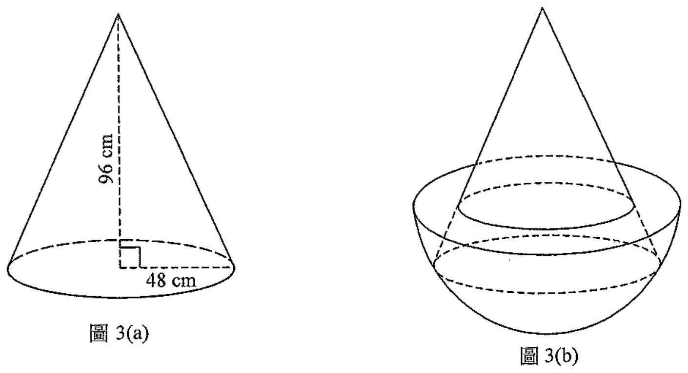

題目
圖 3(a) 顯示底半徑為 $48\text{ cm}$ 及高為 $96\text{ cm}$ 的實心金屬直立圓錐體。
(a) 求該圓錐體的體積，答案以 $\pi$ 表示。 (2 分)
(b) 把半徑為 $60\text{ cm}$ 的半球形容器鉛垂置於一水平面上。該容器載滿牛奶。
(i) 求該容器內牛奶的體積，答案以 $\pi$ 表示。
(ii) 現把該圓錐體鉛垂置於該容器內，如圖 3(b) 所示。某工匠宣稱剩下在該容器內的牛奶的體積大於 $0.3\text{ m}^{3}$。你是否同意？試解釋你的答案。 (5 分)

圖 3(a) 及圖 3(b)（原卷附圖）
題解
第 1 步
(a) 求圓錐體的體積
圓錐的體積
\(V=\dfrac{1}{3}\pi r^{2}h\)
同底同高的圓柱體積的三分之一。
底半徑 $r=48\text{ cm}$，高 $h=96\text{ cm}$：
\[ V=\frac{1}{3}\pi(48)^{2}(96) \]
\[ =\frac{1}{3}\pi(2304)(96)=73728\pi\text{ cm}^{3}. \]
題目要求答案以 $\pi$ 表示，所以保留 $\pi$，不要代入 $3.14$。
第 2 步
(b)(i) 求容器內牛奶的體積
球體與半球的體積
\(V_{\text{sphere}}=\dfrac{4}{3}\pi r^{3},\qquad V_{\text{hemisphere}}=\dfrac{2}{3}\pi r^{3}\)
半球是球體的一半。
容器是半徑 $60\text{ cm}$ 的半球，盛滿牛奶，牛奶的體積等於容器的容量：
\[ V=\frac{2}{3}\pi(60)^{3} \]
\[ =\frac{2}{3}\pi(216000)=144000\pi\text{ cm}^{3}. \]
「載滿牛奶」表示牛奶的體積就是整個半球的體積。
第 3 步
(b)(ii) 求圓錐底部在牛奶面下的深度
畢氏定理
\(a^{2}+b^{2}=c^{2}\)
在直角三角形的斜邊與兩條直角邊之間建立關係。
圓錐體鉛垂放入容器後，錐底（半徑 $48\text{ cm}$ 的圓）剛好貼着半球形容器的內壁。
考慮通過圓錐軸的橫切面：在該切面中，半球的半徑 $60\text{ cm}$ 是直角三角形的斜邊，錐底半徑 $48\text{ cm}$ 是一條直角邊，另一條直角邊就是錐底在容器口（牛奶面）以下的深度 $d$：
\[ d^{2}+48^{2}=60^{2} \]
\[ d^{2}=3600-2304=1296 \]
\[ d=36\text{ cm}. \]
圓錐高 $96\text{ cm}$，所以錐頂在牛奶面之上
\[ 96-36=60\text{ cm}. \]
牛奶面就是半球的開口（半徑 $60\text{ cm}$ 的圓）；「錐底貼着內壁」是因為容器在該深度的截面半徑正好是 $48\text{ cm}$。
第 4 步
(b)(ii) 求露在牛奶面上方的小圓錐的半徑
相似三角形的對應邊成比例
\(\dfrac{r_{1}}{r_{2}}=\dfrac{h_{1}}{h_{2}}\)
平行於底面的截面把圓錐切成一個與原圓錐相似的小圓錐。
在牛奶面上方的部分是一個與整個圓錐相似的小圓錐，高為 $60\text{ cm}$。設其底半徑為 $r$，由相似三角形：
\[ \frac{r}{48}=\frac{60}{96}=\frac{5}{8} \]
\[ r=48\times\frac{5}{8}=30\text{ cm}. \]
第 5 步
(b)(ii) 求浸在牛奶中的圓錐部分的體積
相似立體的體積比
\(\dfrac{V_{1}}{V_{2}}=k^{3}\)
長度比為 $k:1$ 時，體積比為 $k^{3}:1$。
牛奶面上方的小圓錐與整個圓錐的長度比為 $\dfrac{5}{8}$，故體積比為 $\left(\dfrac{5}{8}\right)^{3}=\dfrac{125}{512}$：
小圓錐的體積 $=73728\pi\times\dfrac{125}{512}=18000\pi\text{ cm}^{3}$。
（亦可直接算：$\dfrac{1}{3}\pi(30)^{2}(60)=18000\pi$。）
浸在牛奶中的部分 = 整個圓錐 − 小圓錐：
\[ 73728\pi-18000\pi=55728\pi\text{ cm}^{3}. \]
第 6 步
(b)(ii) 求剩下牛奶的體積
容器容量 $144000\pi\text{ cm}^{3}$，減去圓錐佔去的部分：
\[ 144000\pi-55728\pi=88272\pi\text{ cm}^{3}. \]
第 7 步
(b)(ii) 換單位並與 $0.3\text{ m}^{3}$ 比較
由 $1\text{ m}=100\text{ cm}$ 得 $1\text{ m}^{3}=100^{3}\text{ cm}^{3}=10^{6}\text{ cm}^{3}$，故
\[ 88272\pi\text{ cm}^{3}=\frac{88272\pi}{10^{6}}\text{ m}^{3}\approx0.277\text{ m}^{3}. \]
由於
\[ 0.277\text{ m}^{3}<0.3\text{ m}^{3}, \]
剩下在容器內的牛奶的體積並不
大於 $0.3\text{ m}^{3}$，故
不同意該工匠的宣稱。
比較時保留 $\pi$ 到最後一步，可避免中途四捨五入帶來的誤差。
答案(a) $73728\pi\text{ cm}^{3}$
(b)(i) $144000\pi\text{ cm}^{3}$
(b)(ii) 剩下牛奶的體積 $=88272\pi\text{ cm}^{3}\approx0.277\text{ m}^{3}$，小於 $0.3\text{ m}^{3}$，故不同意。